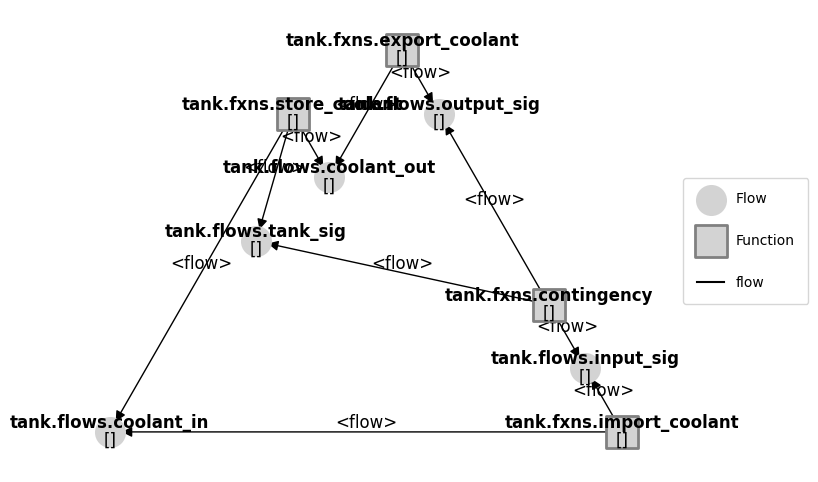
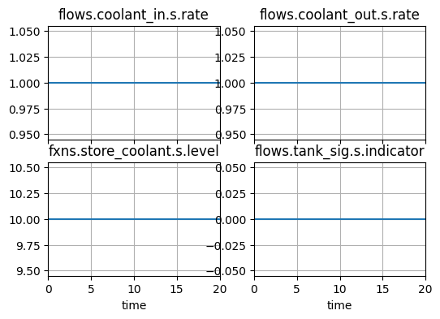
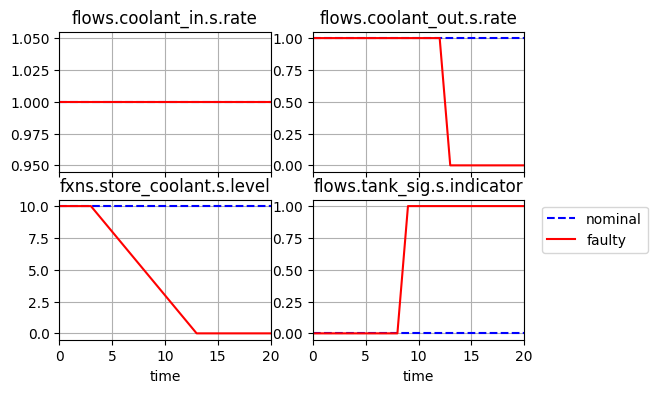
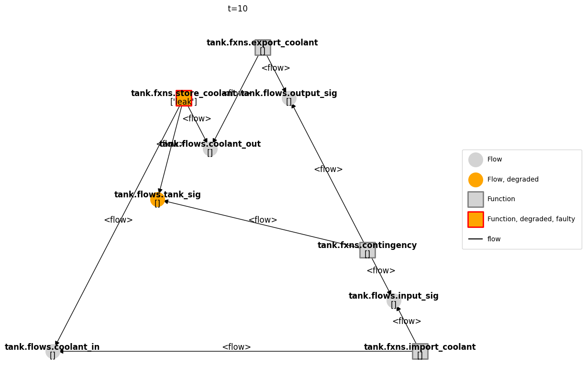
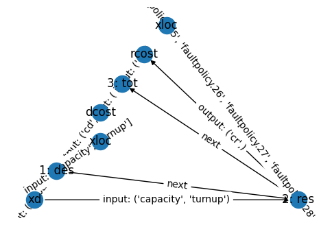
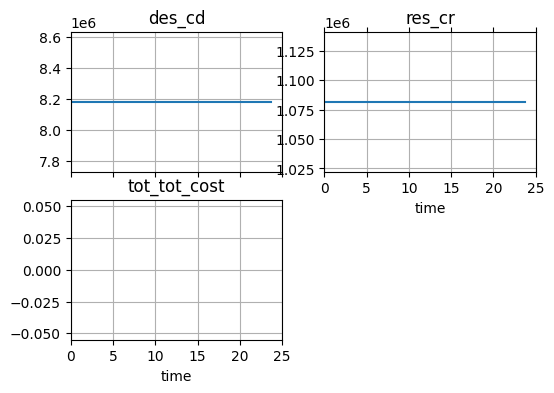

Paper[jmd]: Optimization Architecture Comparison over Cooling Tank Problem
This notebook demonstrates the optimization of the tank model described in model_optimization.py using the ProblemInterface class in the fmdtools.search module.
This problem was studied in Hulse, D., & Hoyle, C. (2022). Understanding Resilience Optimization Architectures: Alignment and Coupling in Multilevel Decomposition Strategies. Journal of Mechanical Design, 144(11), 111704., though the implementation may not be totally consistent with that paper due to changes in the model as well as fmdtools simulation/optimization capabilities.
Note that this problem/notebook was loosely adapted from the identical problem here: https://github.com/DesignEngrLab/resil_opt_examples/tree/main/Cooling%20Tank%20Problem, which shows more comparisions of these architectures running on an earlier version of fmdtools.
Copyright © 2024, United States Government, as represented by the Administrator of the National Aeronautics and Space Administration. All rights reserved.
The “"Fault Model Design tools - fmdtools version 2"” software is licensed under the Apache License, Version 2.0 (the "License"); you may not use this file except in compliance with the License. You may obtain a copy of the License at http://www.apache.org/licenses/LICENSE-2.0.
Unless required by applicable law or agreed to in writing, software distributed under the License is distributed on an "AS IS" BASIS, WITHOUT WARRANTIES OR CONDITIONS OF ANY KIND, either express or implied. See the License for the specific language governing permissions and limitations under the License.
from model_optimization import Tank
from fmdtools.define.architecture.function import FunctionArchitectureGraph
from fmdtools.sim import propagate as prop
Simulation
Verifying the nominal state:
In the nominal state, no change in system state should occurs. Flows will be constant and no signal is on.
mdl = Tank()
result, mdlhist = prop.nominal(mdl, track='all', to_return={'graph': FunctionArchitectureGraph})
fig = result.tend.graph.draw(figsize=(8,6))

mdlhist
time: array(21)
flows.coolant_in.s.effort: array(21)
flows.coolant_in.s.rate: array(21)
flows.coolant_out.s.effort: array(21)
flows.coolant_out.s.rate: array(21)
flows.input_sig.s.indicator: array(21)
flows.input_sig.s.action: array(21)
flows.tank_sig.s.indicator: array(21)
flows.tank_sig.s.action: array(21)
flows.output_sig.s.indicator: array(21)
flows.output_sig.s.action: array(21)
fxns.import_coolant.s.amt_open: array(21)
fxns.import_coolant.m.faults.blockage: array(21)
fxns.import_coolant.m.faults.stuck: array(21)
fxns.import_coolant.m.sub_faults: array(21)
fxns.store_coolant.s.level: array(21)
fxns.store_coolant.s.net_flow: array(21)
fxns.store_coolant.s.coolingbuffer: array(21)
fxns.store_coolant.m.faults.leak: array(21)
fxns.store_coolant.m.sub_faults: array(21)
fxns.export_coolant.s.amt_open: array(21)
fxns.export_coolant.m.faults.blockage: array(21)
fxns.export_coolant.m.faults.stuck: array(21)
fxns.export_coolant.m.sub_faults: array(21)
fig, ax = mdlhist.plot_line('flows.coolant_in.s.rate', 'flows.coolant_out.s.rate', 'fxns.store_coolant.s.level', 'flows.tank_sig.s.indicator')

What happens under component faults?
Here we model a leak of the tank. As shown, the coolant leaks until there is no more coolant left in the tank. While this results in a warning signal, the default contingency management policy is to take no actions to alleviate the condition.
resgraph, mdlhist = prop.one_fault(mdl,'store_coolant','leak', time=3, track='all',to_return=['graph','classify','endfaults'])
fig, ax = mdlhist.plot_line('flows.coolant_in.s.rate', 'flows.coolant_out.s.rate', 'fxns.store_coolant.s.level', 'flows.tank_sig.s.indicator')

mg = FunctionArchitectureGraph(mdl)
fig, ax = mg.draw_from(10, mdlhist)

Full set of modes
The tank leak mode will not be the only mode considered, but also leak and blockage faults in the Input/Output blocks.
from fmdtools.sim.sample import FaultDomain, FaultSample
fd = FaultDomain(mdl)
fd.add_all()
fd
FaultDomain with faults:
-('tank.fxns.import_coolant', 'blockage')
-('tank.fxns.import_coolant', 'stuck')
-('tank.fxns.store_coolant', 'leak')
-('tank.fxns.export_coolant', 'blockage')
-('tank.fxns.export_coolant', 'stuck')
fs = FaultSample(fd)
fs.add_fault_phases("na")
fs
FaultSample of scenarios:
- tank_fxns_import_coolant_blockage_t0p0
- tank_fxns_import_coolant_stuck_t0p0
- tank_fxns_store_coolant_leak_t0p0
- tank_fxns_export_coolant_blockage_t0p0
- tank_fxns_export_coolant_stuck_t0p0
We can then verify the faulty results:
results, mdlhists = prop.fault_sample(mdl, fs)
SCENARIOS COMPLETE: 100%|██████████| 5/5 [00:00<00:00, 49.98it/s]
from fmdtools.analyze.tabulate import result_summary_fmea
fmea_tab = result_summary_fmea(results, mdlhists)
fmea_tab
| degraded | faulty | rate | cost | expected_cost | |
|---|---|---|---|---|---|
| nominal | [] | [] | 1.0 | 0.0 | 0.0 |
| tank_fxns_import_coolant_blockage_t0p0 | [] | [] | 0.0 | 2100000.0 | 35000.0 |
| tank_fxns_import_coolant_stuck_t0p0 | [] | [] | 0.0 | 0.0 | 0.0 |
| tank_fxns_store_coolant_leak_t0p0 | [] | [] | 0.00001 | 1000000.0 | 1000000.0 |
| tank_fxns_export_coolant_blockage_t0p0 | [] | [] | 0.0 | 100000.0 | 1666.666667 |
| tank_fxns_export_coolant_stuck_t0p0 | [] | [] | 0.0 | 0.0 | 0.0 |
Defining Optimization Problem
We can define a compbined optimization problem around this model using the OptimizationArchitecture, ParameterSimProblem, and SimpleProblem classes.
In this case, we consider the joint minimization of design cost (defined in a function) and resilience cost (expected cost over the above list of scenarios). This is over two sets of variables
capacity and turnup (design variables that effect both design and resilience costs), and
the resilience policy (variables that only effect resilience cost)
To model design cost (which does not involve simulation), we first define a SimpleProblem which calls a predefined function:
def x_to_descost(*xdes):
pen = 0 #determining upper-level penalty
if xdes[0]<10:
pen+=1e5*(10-xdes[0])**2
if xdes[0]>100:
pen+=1e5*(100-xdes[0])**2
if xdes[1]<0:
pen+=1e5*(xdes[1])**2
if xdes[1]>1:
pen+=1e5*(1-xdes[1])**2
return (xdes[0]-10)*1000 + (xdes[0]-10)**2*1000 + xdes[1]**2*10000 + pen
from fmdtools.sim.search import SimpleProblem
class TankDesignProblem(SimpleProblem):
def init_problem(self, **kwargs):
self.add_variables("capacity", "turnup")
self.add_objective("cd", x_to_descost)
sp = TankDesignProblem()
sp
TankDesignProblem with:
VARIABLES
-capacity nan
-turnup nan
OBJECTIVES
-cd nan
sp.cd(1, 1)
np.float64(8182000.0)
sp
TankDesignProblem with:
VARIABLES
-capacity 1.0000
-turnup 1.0000
OBJECTIVES
-cd 8182000.0000
To optimize resilience costs, we can additionally use ParameterSimProblem:
from fmdtools.sim.search import ParameterSimProblem
from fmdtools.sim.sample import ParameterDomain
The ParameterDomain is defined by “capacity” and “turnup” variables, as well as the resilience policy:
from model_optimization import TankParam
pd = ParameterDomain(TankParam)
pd.add_variables("capacity", "turnup")
The resilience policy is translated using x_to_fp
from model_optimization import x_to_fp
fp_varnames = ['faultpolicy.'+str(i) for i, v in enumerate(TankParam.__defaults__['faultpolicy'])]
pd.add_variables(*fp_varnames, var_map=x_to_fp)
fp_vars = [1 for i, v in enumerate(TankParam.__defaults__['faultpolicy'])]
pd(1, 1, *fp_vars)
TankParam(capacity=1.0, turnup=1.0, faultpolicy=((-1, -1, -1, 'l', 1), (-1, -1, 0, 'l', 1), (-1, -1, 1, 'l', 1), (-1, 0, -1, 'l', 1), (-1, 0, 0, 'l', 1), (-1, 0, 1, 'l', 1), (-1, 1, -1, 'l', 1), (-1, 1, 0, 'l', 1), (-1, 1, 1, 'l', 1), (0, -1, -1, 'l', 1), (0, -1, 0, 'l', 1), (0, -1, 1, 'l', 1), (0, 0, -1, 'l', 1), (0, 0, 0, 'l', 1), (0, 0, 1, 'l', 1), (0, 1, -1, 'l', 1), (0, 1, 0, 'l', 1), (0, 1, 1, 'l', 1), (1, -1, -1, 'l', 1), (1, -1, 0, 'l', 1), (1, -1, 1, 'l', 1), (1, 0, -1, 'l', 1), (1, 0, 0, 'l', 1), (1, 0, 1, 'l', 1), (1, 1, -1, 'l', 1), (1, 1, 0, 'l', 1), (1, 1, 1, 'l', 1), (-1, -1, -1, 'u', 1), (-1, -1, 0, 'u', 1), (-1, -1, 1, 'u', 1), (-1, 0, -1, 'u', 1), (-1, 0, 0, 'u', 1), (-1, 0, 1, 'u', 1), (-1, 1, -1, 'u', 1), (-1, 1, 0, 'u', 1), (-1, 1, 1, 'u', 1), (0, -1, -1, 'u', 1), (0, -1, 0, 'u', 1), (0, -1, 1, 'u', 1), (0, 0, -1, 'u', 1), (0, 0, 0, 'u', 1), (0, 0, 1, 'u', 1), (0, 1, -1, 'u', 1), (0, 1, 0, 'u', 1), (0, 1, 1, 'u', 1), (1, -1, -1, 'u', 1), (1, -1, 0, 'u', 1), (1, -1, 1, 'u', 1), (1, 0, -1, 'u', 1), (1, 0, 0, 'u', 1), (1, 0, 1, 'u', 1), (1, 1, -1, 'u', 1), (1, 1, 0, 'u', 1), (1, 1, 1, 'u', 1)), policymap={(-1, -1, -1): (1, 1), (-1, -1, 0): (1, 1), (-1, -1, 1): (1, 1), (-1, 0, -1): (1, 1), (-1, 0, 0): (1, 1), (-1, 0, 1): (1, 1), (-1, 1, -1): (1, 1), (-1, 1, 0): (1, 1), (-1, 1, 1): (1, 1), (0, -1, -1): (1, 1), (0, -1, 0): (1, 1), (0, -1, 1): (1, 1), (0, 0, -1): (1, 1), (0, 0, 0): (1, 1), (0, 0, 1): (1, 1), (0, 1, -1): (1, 1), (0, 1, 0): (1, 1), (0, 1, 1): (1, 1), (1, -1, -1): (1, 1), (1, -1, 0): (1, 1), (1, -1, 1): (1, 1), (1, 0, -1): (1, 1), (1, 0, 0): (1, 1), (1, 0, 1): (1, 1), (1, 1, -1): (1, 1), (1, 1, 0): (1, 1), (1, 1, 1): (1, 1)})
pd
ParameterDomain with:
- variables: {'capacity': (), 'turnup': (), 'faultpolicy.0': (), 'faultpolicy.1': (), 'faultpolicy.2': (), 'faultpolicy.3': (), 'faultpolicy.4': (), 'faultpolicy.5': (), 'faultpolicy.6': (), 'faultpolicy.7': (), 'faultpolicy.8': (), 'faultpolicy.9': (), 'faultpolicy.10': (), 'faultpolicy.11': (), 'faultpolicy.12': (), 'faultpolicy.13': (), 'faultpolicy.14': (), 'faultpolicy.15': (), 'faultpolicy.16': (), 'faultpolicy.17': (), 'faultpolicy.18': (), 'faultpolicy.19': (), 'faultpolicy.20': (), 'faultpolicy.21': (), 'faultpolicy.22': (), 'faultpolicy.23': (), 'faultpolicy.24': (), 'faultpolicy.25': (), 'faultpolicy.26': (), 'faultpolicy.27': (), 'faultpolicy.28': (), 'faultpolicy.29': (), 'faultpolicy.30': (), 'faultpolicy.31': (), 'faultpolicy.32': (), 'faultpolicy.33': (), 'faultpolicy.34': (), 'faultpolicy.35': (), 'faultpolicy.36': (), 'faultpolicy.37': (), 'faultpolicy.38': (), 'faultpolicy.39': (), 'faultpolicy.40': (), 'faultpolicy.41': (), 'faultpolicy.42': (), 'faultpolicy.43': (), 'faultpolicy.44': (), 'faultpolicy.45': (), 'faultpolicy.46': (), 'faultpolicy.47': (), 'faultpolicy.48': (), 'faultpolicy.49': (), 'faultpolicy.50': (), 'faultpolicy.51': (), 'faultpolicy.52': (), 'faultpolicy.53': ()}
- constants: {}
- parameter_initializer: TankParam
Which we then use to define the problem:
class TankParameterProblem(ParameterSimProblem):
def init_problem(self, **kwargs):
self.add_sim(mdl, "fault_sample", fs, **kwargs)
self.add_parameterdomain(pd)
self.add_result_objective("cr", "classify.expected_cost")
psp = TankParameterProblem()
psp
TankParameterProblem with:
VARIABLES
-capacity nan
-turnup nan
-faultpolicy.0 nan
-faultpolicy.1 nan
-faultpolicy.2 nan
-faultpolicy.3 nan
-faultpolicy.4 nan
-faultpolicy.5 nan
-faultpolicy.6 nan
-faultpolicy.7 nan
-faultpolicy.8 nan
-faultpolicy.9 nan
-faultpolicy.10 nan
-faultpolicy.11 nan
-faultpolicy.12 nan
-faultpolicy.13 nan
-faultpolicy.14 nan
-faultpolicy.15 nan
-faultpolicy.16 nan
-faultpolicy.17 nan
-faultpolicy.18 nan
-faultpolicy.19 nan
-faultpolicy.20 nan
-faultpolicy.21 nan
-faultpolicy.22 nan
-faultpolicy.23 nan
-faultpolicy.24 nan
-faultpolicy.25 nan
-faultpolicy.26 nan
-faultpolicy.27 nan
-faultpolicy.28 nan
-faultpolicy.29 nan
-faultpolicy.30 nan
-faultpolicy.31 nan
-faultpolicy.32 nan
-faultpolicy.33 nan
-faultpolicy.34 nan
-faultpolicy.35 nan
-faultpolicy.36 nan
-faultpolicy.37 nan
-faultpolicy.38 nan
-faultpolicy.39 nan
-faultpolicy.40 nan
-faultpolicy.41 nan
-faultpolicy.42 nan
-faultpolicy.43 nan
-faultpolicy.44 nan
-faultpolicy.45 nan
-faultpolicy.46 nan
-faultpolicy.47 nan
-faultpolicy.48 nan
-faultpolicy.49 nan
-faultpolicy.50 nan
-faultpolicy.51 nan
-faultpolicy.52 nan
-faultpolicy.53 nan
OBJECTIVES
-cr nan
psp.cr(1, 2, *fp_vars)
np.float64(4001124333.333333)
psp.cr(0.5, 1, *fp_vars)
np.float64(4001124333.333333)
Since the design variables affect both design and resilience costs, we can connect these two problems in an overall ProblemArchitecture where design cost evaluation feeds into resilience cost evaluation.
First, we define a simpleproblem to combine the objectives:
def tot(c_d, c_o):
return c_d + c_o
class TotalProblem(SimpleProblem):
def init_problem(self, **kwargs):
self.add_variables("cd", "cr")
self.add_objective("tot_cost", tot)
tot_sp = TotalProblem()
tot_sp.tot_cost(1, 1)
np.float64(2.0)
from fmdtools.sim.search import ProblemArchitecture
class TankProblemArch(ProblemArchitecture):
def init_problem(self, **kwargs):
self.add_connector_variable("xd", "capacity", "turnup")
self.add_connector_objective("dcost", "cd")
self.add_connector_objective("rcost", "cr")
self.add_problem("des", TankDesignProblem(),
outputs={"xd": ("capacity", "turnup"), "dcost": ("cd", )})
self.add_problem("res", TankParameterProblem(**kwargs),
inputs={"xd": ("capacity", "turnup")},
outputs={"rcost": ("cr", )})
self.add_problem("tot", TotalProblem(), inputs={"dcost": ("cd", ), "rcost": ("cr", )})
We can then visualize/verify the setup of this using:
pa = TankProblemArch()
fig, ax = pa.show_sequence()

pa.connectors['xd']
VariableConnector(name='xd', keys=('capacity', 'turnup'), values=array([nan, nan]))
pa
TankProblemArch with:
CONNECTORS
-xd [nan nan]
-dcost [nan]
-rcost [nan]
PROBLEMS
-des({'des_xloc': ['capacity', 'turnup']}) -> ['xd', 'dcost']
-res({'xd': ('capacity', 'turnup'), 'res_xloc': ['faultpolicy.0', 'faultpolicy.1', 'faultpolicy.2', 'faultpolicy.3', 'faultpolicy.4', 'faultpolicy.5', 'faultpolicy.6', 'faultpolicy.7', 'faultpolicy.8', 'faultpolicy.9', 'faultpolicy.10', 'faultpolicy.11', 'faultpolicy.12', 'faultpolicy.13', 'faultpolicy.14', 'faultpolicy.15', 'faultpolicy.16', 'faultpolicy.17', 'faultpolicy.18', 'faultpolicy.19', 'faultpolicy.20', 'faultpolicy.21', 'faultpolicy.22', 'faultpolicy.23', 'faultpolicy.24', 'faultpolicy.25', 'faultpolicy.26', 'faultpolicy.27', 'faultpolicy.28', 'faultpolicy.29', 'faultpolicy.30', 'faultpolicy.31', 'faultpolicy.32', 'faultpolicy.33', 'faultpolicy.34', 'faultpolicy.35', 'faultpolicy.36', 'faultpolicy.37', 'faultpolicy.38', 'faultpolicy.39', 'faultpolicy.40', 'faultpolicy.41', 'faultpolicy.42', 'faultpolicy.43', 'faultpolicy.44', 'faultpolicy.45', 'faultpolicy.46', 'faultpolicy.47', 'faultpolicy.48', 'faultpolicy.49', 'faultpolicy.50', 'faultpolicy.51', 'faultpolicy.52', 'faultpolicy.53']}) -> ['rcost']
-tot({'dcost': ('cd',), 'rcost': ('cr',)}) -> []
VARIABLES
-des_xloc [nan nan]
-res_xloc [nan nan nan nan nan nan nan nan nan nan nan nan nan nan nan nan nan nan
nan nan nan nan nan nan nan nan nan nan nan nan nan nan nan nan nan nan
nan nan nan nan nan nan nan nan nan nan nan nan nan nan nan nan nan nan]
OBJECTIVES
-des_cd nan
-res_cr nan
-tot_tot_cost nan
We can also evaluate the objectives in terms of full or partial sets of the variables:
fp_vars = [0 for i, v in enumerate(TankParam.__defaults__['faultpolicy'])]
pa.res_cr_full(0.5, 1.0, *fp_vars)
np.float64(1081666.6666666667)
pa
TankProblemArch with:
CONNECTORS
-xd [0.5 1. ]
-dcost [9115750.]
-rcost [1081666.66666667]
PROBLEMS
-des({'des_xloc': ['capacity', 'turnup']}) -> ['xd', 'dcost']
-res({'xd': ('capacity', 'turnup'), 'res_xloc': ['faultpolicy.0', 'faultpolicy.1', 'faultpolicy.2', 'faultpolicy.3', 'faultpolicy.4', 'faultpolicy.5', 'faultpolicy.6', 'faultpolicy.7', 'faultpolicy.8', 'faultpolicy.9', 'faultpolicy.10', 'faultpolicy.11', 'faultpolicy.12', 'faultpolicy.13', 'faultpolicy.14', 'faultpolicy.15', 'faultpolicy.16', 'faultpolicy.17', 'faultpolicy.18', 'faultpolicy.19', 'faultpolicy.20', 'faultpolicy.21', 'faultpolicy.22', 'faultpolicy.23', 'faultpolicy.24', 'faultpolicy.25', 'faultpolicy.26', 'faultpolicy.27', 'faultpolicy.28', 'faultpolicy.29', 'faultpolicy.30', 'faultpolicy.31', 'faultpolicy.32', 'faultpolicy.33', 'faultpolicy.34', 'faultpolicy.35', 'faultpolicy.36', 'faultpolicy.37', 'faultpolicy.38', 'faultpolicy.39', 'faultpolicy.40', 'faultpolicy.41', 'faultpolicy.42', 'faultpolicy.43', 'faultpolicy.44', 'faultpolicy.45', 'faultpolicy.46', 'faultpolicy.47', 'faultpolicy.48', 'faultpolicy.49', 'faultpolicy.50', 'faultpolicy.51', 'faultpolicy.52', 'faultpolicy.53']}) -> ['rcost']
-tot({'dcost': ('cd',), 'rcost': ('cr',)}) -> []
VARIABLES
-des_xloc [0.5 1. ]
-res_xloc [0. 0. 0. 0. 0. 0. 0. 0. 0. 0. 0. 0. 0. 0. 0. 0. 0. 0. 0. 0. 0. 0. 0. 0.
0. 0. 0. 0. 0. 0. 0. 0. 0. 0. 0. 0. 0. 0. 0. 0. 0. 0. 0. 0. 0. 0. 0. 0.
0. 0. 0. 0. 0. 0.]
OBJECTIVES
-des_cd 9115750.0000
-res_cr 1081666.6667
-tot_tot_cost nan
pa.tot_tot_cost_full(0.5, 1.0, *fp_vars)
np.float64(10197416.666666666)
Note that because the simulations are linked, changes to xdes in the cd function in turn change the lower-level cost function by default.
pa.des_cd(1,1)
np.float64(8182000.0)
pa.res_cr(*fp_vars)
np.float64(1081666.6666666667)
pa.tot_tot_cost()
np.float64(9263666.666666666)
Optimization
This problem is optimized here using four different architectures, following the example in:
Hulse, D., & Hoyle, C. (2022). Understanding Resilience Optimization Architectures: Alignment and Coupling in Multilevel Decomposition Strategies. Journal of Mechanical Design, 144(11), 111704.
The optimization of the resilience policy is accomplished using an evolutionary algorithm, defined below:
import numpy as np
import random
def EA(prob_callable, popsize=10, iters=20, mutations=3, crossovers=2, numselect=3, verbose=True, args={}):
# generate initial population:
randpopsize = popsize-numselect-mutations - crossovers
opers = [randpop, mutepop, crossover]
numopers = [randpopsize, mutations, crossovers]
used_opers = [oper for i, oper in enumerate(opers) if numopers[i] > 0]
used_numopers = [numoper for numoper in numopers if numoper > 0]
if args:
pop = np.concatenate((args['seed'], seedpop(), randpop([], popsize-3)))
else:
pop = np.concatenate((seedpop(), randpop([], popsize-3)))
makefeasible(pop)
# evaluate initial population
values = np.array([prob_callable(*[*x[0], *x[1]]) for x in pop])
# gen/evaluate mutated population
for i in range(iters):
goodpop, goodvals = select(pop, values, numselect)
newpop = np.concatenate(tuple([oper(goodpop, used_numopers[i]) for i, oper in enumerate(used_opers)]))
makefeasible(newpop)
newvals = np.array([prob_callable(*[*x[0], *x[1]]) for x in newpop])
pop, values = np.concatenate(
(goodpop, newpop)), np.concatenate((goodvals, newvals))
if verbose == "iters":
print(["iter "+str(i)+": ", min(values)])
minind = np.argmin(values)
if args:
args['seed'] = goodpop
args['ll_opt'] = values[minind]
args['ll_optx'] = pop[minind]
if verbose == "final":
print(values[minind])
return pop[minind], values[minind]
possible_sols = [[-1, -1], [-1, 0], [-1, 1],
[0, -1], [0, 0], [0, 1], [1, -1], [1, 0], [1, 1]]
def randpop(goodpop, popsize):
return np.array([[[random.randint(-1, 1) for a in range(0, 27)],
[random.randint(-1, 1) for a in range(0, 27)]]
for i in range(0, popsize)])
def seedpop():
donothing = np.zeros((2, 27))
adjustup = np.ones((2, 27))
adjustdown = -np.ones((2, 27))
return np.array([donothing, adjustup, adjustdown])
def mutepop(goodpop, mutations):
to_mutate = np.random.choice(
[i for i in range(len(goodpop))], size=mutations, replace=False)
return np.array([permute(solution) for solution in goodpop[to_mutate]])
def permute(solution):
mutation = possible_sols[random.randint(0, 8)]
to_mutate = random.randint(0, 26)
solution[0][to_mutate] = mutation[0]
solution[1][to_mutate] = mutation[1]
return solution
def crossover(goodpop, crossovers):
to_cross = np.random.choice(
[i for i in range(len(goodpop))], size=crossovers, replace=False)
divider = np.random.randint(1, 25)
swap = np.random.choice([i for i in range(crossovers)],
size=crossovers, replace=False)
return np.array([[np.concatenate((goodpop[to_cross[i]][0][:divider], goodpop[to_cross[swap[i]]][0][divider:])), np.concatenate((goodpop[to_cross[i]][1][:divider], goodpop[to_cross[swap[i]]][1][divider:]))] for i in range(crossovers)])
def select(solutions, values, numselect):
selection = np.argsort(values)[0:numselect]
return solutions[selection], values[selection]
def makefeasible(population):
for sol in population:
sol[0][13] = 0
sol[1][13] = 0
from multiprocessing import Pool
pa = TankProblemArch() #pool = Pool(5), close_pool=False)
pa.res_cr_full(1.0, 1.0, *fp_vars)
np.float64(1081666.6666666667)
pop, vals = EA(pa.res_cr, verbose = 'iters')
['iter 0: ', np.float64(1081666.6666666667)]
['iter 1: ', np.float64(1081666.6666666667)]
['iter 2: ', np.float64(1081666.6666666667)]
['iter 3: ', np.float64(1081666.6666666667)]
['iter 4: ', np.float64(1081666.6666666667)]
['iter 5: ', np.float64(1081666.6666666667)]
['iter 6: ', np.float64(1081666.6666666667)]
['iter 7: ', np.float64(1081666.6666666667)]
['iter 8: ', np.float64(1081666.6666666667)]
['iter 9: ', np.float64(1081666.6666666667)]
['iter 10: ', np.float64(1081666.6666666667)]
['iter 11: ', np.float64(1081666.6666666667)]
['iter 12: ', np.float64(1081666.6666666667)]
['iter 13: ', np.float64(1081666.6666666667)]
['iter 14: ', np.float64(1081666.6666666667)]
['iter 15: ', np.float64(1081666.6666666667)]
['iter 16: ', np.float64(1081666.6666666667)]
['iter 17: ', np.float64(1081666.6666666667)]
['iter 18: ', np.float64(1081666.6666666667)]
['iter 19: ', np.float64(1081666.6666666667)]
fig, axs = pa.plot_opt_hist()
C:\Users\dhulse\Documents\GitHub\fmdtools\src\fmdtools\sim\search.py:360: RuntimeWarning: All-NaN slice encountered
hist[val] = [np.nanmin(arr[:i]) for i in range(1, len(arr)+1)]

Alternating Optimization
Which can then be optimized in an alternating or bilevel optimization structure:
from scipy.optimize import minimize
def sub_totcost(tot_cost_callable):
def new_func(xres, args):
return tot_cost_callable(*xres, *args)
return new_func
def alternating_opt(tot_cost_callable, dcost_callable, rcost_callable, option='with_cr', pool=False, xdes=[21, .5], max_alts=10):
xdes = np.array(xdes)
args = {'seed': seedpop(), 'll_opt': 1e6, 'll_optx': []}
newmin = 100000000
lastmin = 1000000001
bestsol = np.zeros(54)
last_run = False
fhist = []
thist = [0]
xdhist = [xdes]
for n in range(max_alts):
if option == 'with_cr':
tot_cost_call = sub_totcost(tot_cost_callable)
result = minimize(tot_cost_call,
[np.round(xdes[0], 1), np.round(xdes[1], 1)],
method='Nelder-Mead',
bounds=((10, 100), (0, 1)),
callback=callbackF1,
args=bestsol,
options={'disp': True})
else:
result = minimize(dcost_callable,
[np.round(xdes[0], 1),
np.round(xdes[1], 1)],
method='Nelder-Mead',
bounds=((10, 100), (0, 1)),
callback=callbackF1,
options={'disp': True})
xdes = result['x']
dcost = dcost_callable(*xdes)
bestpop, rcost = EA(rcost_callable, args=args, popsize=50, mutations=10,
numselect=20, crossovers=5, iters=100, verbose="iters")
bestsol = [*bestpop[0], *bestpop[1]]
lastmin = newmin
newmin = dcost + rcost
fhist.append(newmin)
xdhist.append(xdes)
print(n, newmin, lastmin-newmin)
if lastmin - newmin < 0.1:
if last_run:
break
else:
last_run = True
else:
last_run = False
fhist.append(newmin)
return result, args, fhist, thist, xdhist
def callbackF(Xdes, result):
print('{0:4d} {1: 3.6f} {2: 3.6f} {3: 3.6f}'.format(
result['nit'], Xdes[0], Xdes[1], result['fun']))
def callbackF1(Xdes):
print(Xdes)
result, args, fhist, thist, xdhist = alternating_opt(pa.tot_tot_cost_full, pa.des_cd, pa.res_cr, max_alts=1)
[18.9 0.5375]
[17.85 0.50625]
[13.125 0.565625]
[12.075 0.534375]
[12.075 0.534375]
[12.075 0.534375]
[12.075 0.503125]
[12.075 0.503125]
[12.075 0.503125]
[12.075 0.503125]
[12.075 0.503125]
[12.075 0.503125]
[12.01015625 0.50839844]
[12.01015625 0.50058594]
[12.01015625 0.50058594]
[12.01015625 0.50058594]
[12.01015625 0.50058594]
[12.01015625 0.50058594]
[12.00610352 0.48699951]
[12.00610352 0.48699951]
[12.00863647 0.47205353]
[12.00154419 0.46390228]
[12.00306396 0.42993469]
[12.00306396 0.42993469]
[12.00971298 0.40632648]
[12.00822487 0.33541975]
[12.02077885 0.25274997]
[12.02407961 0.06960161]
[12.02407961 0.06960161]
[12.02407961 0.06960161]
[12.0225915 0.06960161]
[12.02924051 0.0348008 ]
[12.0277524 0.0348008]
[12.0277524 0.0348008]
[12.02146354 0.06090141]
[12.02273595 0.0391509 ]
[12.01079444 0.08047686]
[12.00736851 0.05763883]
[12.00736851 0.05763883]
[12.00736851 0.05763883]
[12.00394258 0.0348008 ]
[12.00394258 0.0348008 ]
[12.00478061 0. ]
[12.00478061 0. ]
[1.20020078e+01 6.72906165e-03]
[1.20020078e+01 6.72906165e-03]
[1.20000730e+01 6.72906165e-03]
[1.20000730e+01 6.72906165e-03]
[1.20000084e+01 3.36453082e-03]
[1.20000084e+01 3.36453082e-03]
[1.20000084e+01 3.36453082e-03]
[1.20000084e+01 3.36453082e-03]
[1.20000084e+01 3.36453082e-03]
[1.20000084e+01 3.36453082e-03]
[1.20000084e+01 3.36453082e-03]
[1.20000084e+01 3.36453082e-03]
[1.20000084e+01 3.36453082e-03]
[1.20000023e+01 1.87283454e-03]
[1.20000023e+01 1.87283454e-03]
[1.20000023e+01 1.87283454e-03]
[1.20000023e+01 1.87283454e-03]
[1.20000024e+01 8.16900855e-04]
[1.20000024e+01 8.16900855e-04]
[1.20000024e+01 8.16900855e-04]
[1.20000024e+01 8.16900855e-04]
[12.00000087 0. ]
[12.00000087 0. ]
[12.00000087 0. ]
[12.00000087 0. ]
[12.00000041 0. ]
[12.00000041 0. ]
[12.00000041 0. ]
[12.0000003 0. ]
[12.0000003 0. ]
[12.0000001 0. ]
[12.0000001 0. ]
[12.0000001 0. ]
[12.0000001 0. ]
[12.0000001 0. ]
[12.00000005 0. ]
[12.00000001 0. ]
[12.00000001 0. ]
[12.00000001 0. ]
[12.00000001 0. ]
[12.00000001 0. ]
Optimization terminated successfully.
Current function value: 1057666.666717
Iterations: 86
Function evaluations: 167
['iter 0: ', np.float64(1036000.0)]
['iter 1: ', np.float64(1036000.0)]
['iter 2: ', np.float64(1036000.0)]
['iter 3: ', np.float64(1036000.0)]
['iter 4: ', np.float64(1035666.6666666666)]
['iter 5: ', np.float64(1035666.6666666666)]
['iter 6: ', np.float64(1035666.6666666666)]
['iter 7: ', np.float64(1035666.6666666666)]
['iter 8: ', np.float64(1035666.6666666666)]
['iter 9: ', np.float64(1035666.6666666666)]
['iter 10: ', np.float64(1035666.6666666666)]
['iter 11: ', np.float64(1035666.6666666666)]
['iter 12: ', np.float64(1035566.6666666666)]
['iter 13: ', np.float64(1035433.3333333333)]
['iter 14: ', np.float64(1035433.3333333333)]
['iter 15: ', np.float64(1035433.3333333333)]
['iter 16: ', np.float64(1035433.3333333333)]
['iter 17: ', np.float64(1035433.3333333333)]
['iter 18: ', np.float64(1035433.3333333333)]
['iter 19: ', np.float64(1035433.3333333333)]
['iter 20: ', np.float64(1035433.3333333333)]
['iter 21: ', np.float64(1035433.3333333333)]
['iter 22: ', np.float64(1035433.3333333333)]
['iter 23: ', np.float64(1035433.3333333333)]
['iter 24: ', np.float64(1035433.3333333333)]
['iter 25: ', np.float64(1035433.3333333333)]
['iter 26: ', np.float64(1035433.3333333333)]
['iter 27: ', np.float64(1035433.3333333333)]
['iter 28: ', np.float64(1035433.3333333333)]
['iter 29: ', np.float64(1035433.3333333333)]
['iter 30: ', np.float64(1035433.3333333333)]
['iter 31: ', np.float64(1035433.3333333333)]
['iter 32: ', np.float64(1035433.3333333333)]
['iter 33: ', np.float64(1035433.3333333333)]
['iter 34: ', np.float64(1035433.3333333333)]
['iter 35: ', np.float64(1035433.3333333333)]
['iter 36: ', np.float64(1035433.3333333333)]
['iter 37: ', np.float64(1035433.3333333333)]
['iter 38: ', np.float64(1035433.3333333333)]
['iter 39: ', np.float64(1035433.3333333333)]
['iter 40: ', np.float64(1035433.3333333333)]
['iter 41: ', np.float64(1035433.3333333333)]
['iter 42: ', np.float64(1035433.3333333333)]
['iter 43: ', np.float64(1035433.3333333333)]
['iter 44: ', np.float64(1035433.3333333333)]
['iter 45: ', np.float64(1035433.3333333333)]
['iter 46: ', np.float64(1035433.3333333333)]
['iter 47: ', np.float64(1035433.3333333333)]
['iter 48: ', np.float64(1035433.3333333333)]
['iter 49: ', np.float64(1035433.3333333333)]
['iter 50: ', np.float64(1035433.3333333333)]
['iter 51: ', np.float64(1035433.3333333333)]
['iter 52: ', np.float64(1035433.3333333333)]
['iter 53: ', np.float64(1035433.3333333333)]
['iter 54: ', np.float64(1035433.3333333333)]
['iter 55: ', np.float64(1035433.3333333333)]
['iter 56: ', np.float64(1035433.3333333333)]
['iter 57: ', np.float64(1035433.3333333333)]
['iter 58: ', np.float64(1035433.3333333333)]
['iter 59: ', np.float64(1035433.3333333333)]
['iter 60: ', np.float64(1035433.3333333333)]
['iter 61: ', np.float64(1035333.3333333333)]
['iter 62: ', np.float64(1035333.3333333333)]
['iter 63: ', np.float64(1035333.3333333333)]
['iter 64: ', np.float64(1035333.3333333333)]
['iter 65: ', np.float64(1035333.3333333333)]
['iter 66: ', np.float64(1035333.3333333333)]
['iter 67: ', np.float64(1035333.3333333333)]
['iter 68: ', np.float64(1035333.3333333333)]
['iter 69: ', np.float64(1035333.3333333333)]
['iter 70: ', np.float64(1035333.3333333333)]
['iter 71: ', np.float64(1035333.3333333333)]
['iter 72: ', np.float64(1035333.3333333333)]
['iter 73: ', np.float64(1035333.3333333333)]
['iter 74: ', np.float64(1035333.3333333333)]
['iter 75: ', np.float64(1035333.3333333333)]
['iter 76: ', np.float64(1035333.3333333333)]
['iter 77: ', np.float64(1035333.3333333333)]
['iter 78: ', np.float64(1035333.3333333333)]
['iter 79: ', np.float64(1035333.3333333333)]
['iter 80: ', np.float64(1035333.3333333333)]
['iter 81: ', np.float64(1035333.3333333333)]
['iter 82: ', np.float64(1035333.3333333333)]
['iter 83: ', np.float64(1035333.3333333333)]
['iter 84: ', np.float64(1035333.3333333333)]
['iter 85: ', np.float64(1035333.3333333333)]
['iter 86: ', np.float64(1035333.3333333333)]
['iter 87: ', np.float64(1035333.3333333333)]
['iter 88: ', np.float64(1035333.3333333333)]
['iter 89: ', np.float64(1035333.3333333333)]
['iter 90: ', np.float64(1035333.3333333333)]
['iter 91: ', np.float64(1035333.3333333333)]
['iter 92: ', np.float64(1035333.3333333333)]
['iter 93: ', np.float64(1035333.3333333333)]
['iter 94: ', np.float64(1035333.3333333333)]
['iter 95: ', np.float64(1035333.3333333333)]
['iter 96: ', np.float64(1035333.3333333333)]
['iter 97: ', np.float64(1035333.3333333333)]
['iter 98: ', np.float64(1035333.3333333333)]
['iter 99: ', np.float64(1035333.3333333333)]
0 1041333.3333837099 98958666.66661629
Bilevel Optimization:
Additionally, a bilevel optimization would look like this:
Bilevel optimizations have a lower level which is called repeatedly, see below:
def lower_level(xdes, args= {}):
if not args:
args = {'seed': seedpop(), 'll_opt': 1e6, 'll_optx': [], 'fhist': []}
do_cost = pa.des_cd(*xdes)
bestsol, rcost = EA(pa.res_cr, popsize=20, mutations=6, crossovers=4, numselect=6, args=args)
f = do_cost + rcost
args['fhist'].append(f)
print(' fval: '+str(f)+' xdes: '+str(xdes))
return f
lower_level([1,1])
fval: 9263666.666666666 xdes: [1, 1]
np.float64(9263666.666666666)
This is then called in bilevel_opt:
def bilevel_opt(xdes=[21, .5], maxiter=1000):
args = {'seed': seedpop(), 'll_opt': 1e6, 'll_optx': [], 'fhist': [],
'thist': [], 'xdhist': [xdes]}
result = minimize(lower_level,
xdes,
method='Nelder-Mead',
bounds=((10, 100), (0, 1)),
callback=callbackF1,
args=args,
options={'disp': True, 'adaptive': True, 'fatol': 10, 'xtol': 0.00001, 'maxiter': maxiter})
fullfhist = args['fhist']
fullxdhist = args['xdhist']
bestfhist = [fullfhist[0]]+[min(fullfhist[:i])
for i, f in enumerate(fullfhist) if i != 0]
return result, args, bestfhist
bilevel_opt(maxiter=2)
C:\Users\dhulse\AppData\Local\Temp\1\ipykernel_27988\441469062.py:4: OptimizeWarning: Unknown solver options: xtol
result = minimize(lower_level,
fval: 165600.0 xdes: [21. 0.5]
fval: 189085.83333333337 xdes: [22.05 0.5 ]
fval: 165756.25 xdes: [21. 0.525]
fval: 146042.0833333333 xdes: [19.95 0.525]
fval: 125332.39583333331 xdes: [18.9 0.5375]
[18.9 0.5375]
C:\Users\dhulse\AppData\Local\Temp\1\ipykernel_27988\441469062.py:4: RuntimeWarning: Maximum number of iterations has been exceeded.
result = minimize(lower_level,
( message: Maximum number of iterations has been exceeded.
success: False
status: 2
fun: 125332.39583333331
x: [ 1.890e+01 5.375e-01]
nit: 2
nfev: 5
final_simplex: (array([[ 1.890e+01, 5.375e-01],
[ 2.100e+01, 5.000e-01],
[ 2.100e+01, 5.250e-01]]), array([ 1.253e+05, 1.656e+05, 1.658e+05])),
{'seed': array([[[-1., 0., 1., 0., 0., 0., 1., 0., -1., 1., 0., 0.,
0., 0., 0., 1., 0., 1., -1., 0., -1., 1., 0., 1.,
1., -1., 1.],
[ 1., -1., 1., 1., 1., 1., -1., 0., 1., 0., 0., 0.,
-1., 0., 0., 0., -1., 1., -1., 1., -1., 1., -1., 1.,
0., 0., -1.]],
[[-1., 0., 1., 0., 0., 0., 1., 0., -1., 1., 0., 0.,
0., 0., 0., 1., 0., 1., -1., 0., -1., -1., 0., 1.,
1., -1., 1.],
[ 1., -1., 1., 1., 1., 1., -1., 0., 1., 0., 0., 0.,
-1., 0., 0., 0., -1., 1., -1., 1., -1., 0., -1., 1.,
0., 0., -1.]],
[[-1., 0., 1., 0., 0., 0., 1., 0., -1., 1., 0., 0.,
0., 0., 0., 1., 0., 1., -1., 0., -1., 1., 0., 1.,
1., -1., 1.],
[ 1., -1., 1., 1., 1., 1., -1., 0., 1., 0., 0., 0.,
-1., 0., 0., 0., -1., 1., -1., 1., -1., 1., -1., 1.,
0., 0., -1.]],
[[-1., 0., 1., 0., 0., 0., 1., 0., -1., 1., 0., 0.,
0., 0., 0., 1., 0., 1., -1., 0., -1., 1., 0., 1.,
1., -1., 1.],
[ 1., -1., 1., 1., 1., 1., -1., 0., 1., 0., 0., 0.,
-1., 0., 0., 0., -1., 1., -1., 1., -1., 1., -1., 1.,
0., 0., -1.]],
[[-1., 0., 1., 0., 0., 0., 1., 0., -1., 1., 0., 0.,
0., 0., 0., 1., 0., 1., -1., 0., -1., -1., 0., 1.,
1., -1., 1.],
[ 1., -1., 1., 1., 1., 1., -1., 0., 1., 0., 0., 0.,
-1., 0., 0., 0., -1., 1., -1., 1., -1., 0., -1., 1.,
0., 0., -1.]],
[[-1., 0., 1., 0., 0., 0., 1., 0., -1., 1., 0., 0.,
0., 0., 0., 1., 0., 1., -1., 0., -1., 1., 0., 1.,
1., -1., 1.],
[ 1., -1., 1., 1., 1., 1., -1., 0., 1., 0., 0., 0.,
-1., 0., 0., 0., -1., 1., -1., 1., -1., 1., -1., 1.,
0., 0., -1.]]]),
'll_opt': np.float64(34333.333333333336),
'll_optx': array([[-1., 0., 1., 0., 0., 0., 1., 0., -1., 1., 0., 0., 0.,
0., 0., 1., 0., 1., -1., 0., -1., 1., 0., 1., 1., -1.,
1.],
[ 1., -1., 1., 1., 1., 1., -1., 0., 1., 0., 0., 0., -1.,
0., 0., 0., -1., 1., -1., 1., -1., 1., -1., 1., 0., 0.,
-1.]]),
'fhist': [np.float64(165600.0),
np.float64(189085.83333333337),
np.float64(165756.25),
np.float64(146042.0833333333),
np.float64(125332.39583333331)],
'thist': [],
'xdhist': [[21, 0.5]]},
[np.float64(165600.0),
np.float64(165600.0),
np.float64(165600.0),
np.float64(165600.0),
np.float64(146042.0833333333)])
# pool.close()
# pool.terminate()
Note that these are the previously-recorded results for different strategies:
𝑥_t |
𝑥_l |
𝑓 |
time |
|
|---|---|---|---|---|
Bilevel |
18.000015 |
0.580982 |
285708.991759 |
619.369699 |
Alt. (no 𝐶 𝑅CR) |
10.000000 |
0.000000 |
893333.333333 |
168.275383 |
Alt. (with 𝐶 𝑅CR) |
20.000000 |
0.000000 |
452666.666823 |
306.776320 |
Seq. (with 𝐶 𝑅CR) |
22.000000 |
0.000000 |
466333.333389 |
61.702104 |
Seq. (no 𝐶 𝑅CR) |
10.000000 |
0.000000 |
893333.333333 |
55.957946 |
Generally, we would expect results to be somewhat consistent with this (not exactly, since the lower-level EA is a stochastic search), however, there have been many changes to the underlying toolkit/model, as well as the tank model which may lead to different results.